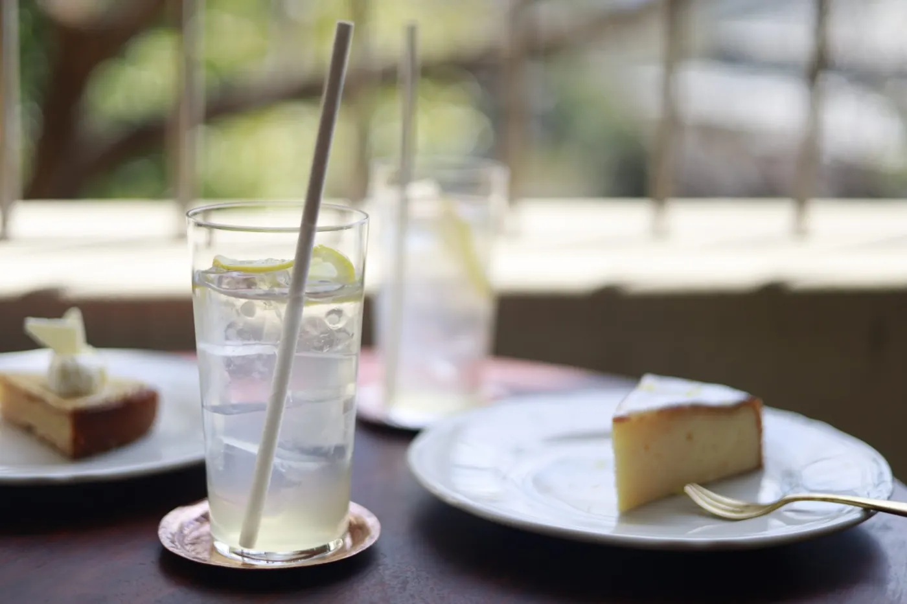

License available
Stock Photos
広告、ウェブサイト、出版物などで利用できる写真を、ストックフォトサービスで販売しています。

NATURE / STOCK PHOTO
夏の訪問者
大きく咲いたヒマワリと、花に立ち寄った昆虫を撮影した一枚です。明るい黄色と大きな余白を生かし、季節、自然、夏のイメージ素材として使いやすい構成にしています。
このサイトには透かし入り・縮小済みのプレビューのみを掲載しています。利用する場合は、各ストックフォトサービスで用途に合ったライセンスをご購入ください。
販売先の個別作品URLが確認できた段階で、このページから商品ページへ直接つなぐこともできます。
For buyers
写真をお探しの方へ
掲載目的、媒体、必要なサイズによって適切なライセンスが異なります。購入や写真利用について不明な点がある場合は、各販売サービスのライセンス条件をご確認ください。
お問い合わせ